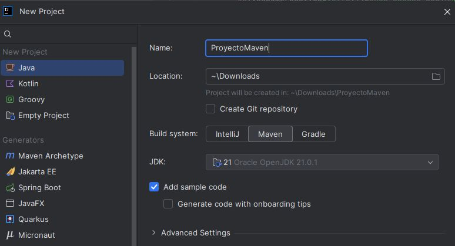
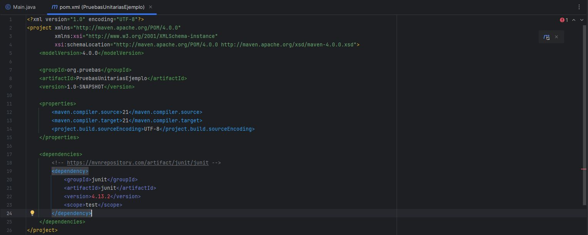

🧩 Pruebas unitarias¶
Descarga de diapositivas
1. ¿Qué son las pruebas unitarias?¶
Idea clave
Una prueba unitaria verifica el correcto funcionamiento de un módulo individual del código —normalmente un método o una clase— de forma aislada, antes de comprobar cómo se integra con el resto del sistema.
Para que una prueba unitaria cumpla su función debe ser:
| Característica | Qué significa en la práctica |
|---|---|
| Automatizable | Se ejecuta sin intervención manual, no "lo pruebo a mano cada vez" |
| Completa | Cubre la mayor cantidad posible de código, no solo el camino feliz |
| Reutilizable | No sirve solo para una ejecución puntual; se puede volver a correr cuando se quiera |
| Independiente | El resultado de una prueba no debe depender de que se haya ejecutado otra antes |
| Profesional | Se documenta y se cuida con la misma calidad que el código de producción |
Las pruebas unitarias traen ventajas claras a medida que el proyecto crece:
- Confianza al modificar: cualquier cambio que rompa algo se detecta enseguida.
- Seguridad antes de integrar: se sabe que cada pieza funciona antes de combinarlas.
- Documentación viva: los tests muestran cómo se espera que se use cada unidad de código.
- Separación de interfaz e implementación: se puede cambiar cómo funciona algo por dentro sin tocar los tests si el comportamiento externo no cambia.
- Localización de errores: se depura la unidad problemática en aislamiento, sin revisar todo el sistema a la vez.
2. JUnit¶
JUnit es el framework de pruebas unitarias más usado en Java. Permite comprobar que cada unidad de código se comporta como se espera y es una pieza habitual del desarrollo ágil y de TDD (Test-Driven Development, desarrollo guiado por pruebas —escribir primero el test y después la implementación que lo satisface—). Se integra con Maven o Gradle para automatizar su ejecución dentro de la integración continua.
Algunos conceptos clave antes de escribir el primer test:
| Concepto | Qué es |
|---|---|
| Prueba unitaria | Verifica una funcionalidad concreta de forma aislada |
| Assert | Instrucción que comprueba si el comportamiento obtenido coincide con el esperado |
| Anotación | Marca el papel que juega cada método dentro del ciclo de vida de la prueba |
| Clase de prueba | Agrupa los métodos de test relacionados con una misma clase de producción |
2.1 Configuración básica con Maven¶
Para usar JUnit necesitas crear un proyecto Maven —una herramienta de construcción que gestiona por ti la estructura de carpetas, la descarga de librerías externas y la compilación del proyecto—. Sin Maven tendrías que descargar los JARs de JUnit a mano, copiarlos a una carpeta y decirle tú mismo al compilador dónde encontrarlos. Maven automatiza todo eso.
Al crear el proyecto en IntelliJ con Maven como build system, el IDE genera automáticamente esta estructura de carpetas:
| Text Only | |
|---|---|

El archivo pom.xml (Project Object Model) es el corazón del proyecto Maven: describe el proyecto, su versión de Java y las dependencias —librerías externas que el proyecto necesita y que Maven descargará automáticamente desde Internet al construirlo—.
¿Qué es una dependencia?¶
Imagina que quieres usar JUnit. Sin Maven tendrías que ir a la web de JUnit, descargar el JAR, guardarlo en alguna carpeta y añadirlo manualmente al classpath cada vez. Con Maven basta con declarar que lo necesitas en el pom.xml: Maven lo busca en Maven Central —el repositorio público donde se publican casi todas las librerías Java— y lo descarga solo.
Para encontrar la dependencia correcta, entra en mvnrepository.com (o directamente en search.maven.org), busca la librería y copia el bloque XML que aparece bajo la pestaña Maven. Para JUnit 5, el bloque que hay que añadir dentro de <dependencies> en el pom.xml es:
El <scope>test</scope> le dice a Maven que esta librería solo hace falta durante las pruebas: no se incluirá en el JAR final de la aplicación. Si omites el scope, la librería se añade también al código de producción, que no es lo que queremos.
Tras pegar la dependencia en el pom.xml, IntelliJ muestra un icono de Maven en el margen del editor. Al hacer clic, Maven descarga la librería y la deja disponible en el proyecto.

2.2 Ciclo de vida de las anotaciones¶
Las anotaciones de JUnit controlan cuándo se ejecuta cada método. El orden es importante para preparar y limpiar el entorno de prueba correctamente:
sequenceDiagram
participant JUnit
participant Test
JUnit->>Test: @BeforeAll (una vez, al inicio)
loop Para cada @Test
JUnit->>Test: @BeforeEach
JUnit->>Test: @Test
JUnit->>Test: @AfterEach
end
JUnit->>Test: @AfterAll (una vez, al final)| Anotación | Cuándo se ejecuta |
|---|---|
@Test |
Marca un método como una prueba |
@BeforeEach |
Antes de cada prueba individual |
@AfterEach |
Después de cada prueba individual |
@BeforeAll |
Una sola vez, al principio de toda la suite de pruebas |
@AfterAll |
Una sola vez, al final de toda la suite |
2.3 Los asserts principales¶
| Método | Comprueba que… |
|---|---|
assertEquals(esperado, obtenido) |
ambos valores son iguales |
assertTrue(condicion) |
la condición es verdadera |
assertFalse(condicion) |
la condición es falsa |
assertNull(objeto) |
el objeto es null |
assertNotNull(objeto) |
el objeto no es null |
assertThrows(TipoExcepcion.class, () -> { ... }) |
el código del lambda lanza esa excepción concreta |
2.4 TDD — Desarrollo guiado por pruebas¶
En el desarrollo normal escribes primero el código y luego los tests. TDD (Test-Driven Development) invierte ese orden: primero escribes un test que falla, luego escribes el mínimo código necesario para que pase, y finalmente mejoras el código sin romper los tests. El ciclo se repite para cada nueva funcionalidad.
flowchart LR
R["🔴 Rojo\nEscribe el test\nantes de tener\nla implementación"] --> G["🟢 Verde\nEscribe el código\nmínimo para\nque el test pase"]
G --> RF["🔵 Refactoriza\nMejora el código\nsin romper\nlos tests"]
RF --> RLa ventaja de TDD no es solo tener tests: es que el diseño del código mejora porque lo piensas desde el punto de vista de quien lo va a usar, no de quien lo va a implementar. Si algo resulta difícil de testear, probablemente está mal diseñado.
Recuerda
El test debe fallar antes de escribir la implementación. Si el test pasa desde el principio, o está mal escrito, o la funcionalidad ya existía. Un test en verde sin haber implementado nada no aporta nada.
3. Tests parametrizados¶
Cuando se quiere probar el mismo método con varios conjuntos de datos distintos, escribir un @Test por cada combinación lleva a duplicar mucho código. Los tests parametrizados resuelven esto ejecutando un único método de prueba varias veces, una por cada conjunto de datos.
flowchart LR
A["❌ Sin parametrizar\n@Test por cada caso\nCódigo duplicado"] --> B["✅ Con @ParameterizedTest\nUn método + tabla de datos\nLimpio y mantenible"]La anotación principal es @ParameterizedTest, que se combina con una fuente de datos:
| Fuente | Cuándo usarla |
|---|---|
@ValueSource |
Una lista de valores de un mismo tipo |
@CsvSource |
Varias columnas de datos separadas por comas, directamente en el código |
@CsvFileSource |
Los datos se leen desde un archivo CSV externo |
@MethodSource |
Un método aparte genera los datos, útil cuando son más complejos |
De varios @Test repetidos a un solo test parametrizado
Partiendo de esta clase:
| Java | |
|---|---|
Sin parametrizar, cada caso necesita su propio assert (o tests separados):
Parametrizando con @CsvSource, cada fila se ejecuta como una llamada independiente:
O, si solo se necesita un parámetro por caso, @ValueSource es más directo:
4. Dobles de prueba¶
Hay casos en los que probar una clase implica, sin querer, probar también sus dependencias: una base de datos, un servicio web, un archivo externo... Eso complica la prueba y mezcla responsabilidades. Los dobles de prueba son objetos que sustituyen esas dependencias reales dentro del test.
El objetivo es aislar la unidad que se quiere probar:
flowchart LR
T["🧪 Test"] --> S["⚙️ Clase bajo prueba"]
S --> M["🎭 Doble\nMock / Stub / Dummy"]
M -.->|"devuelve valor controlado"| S| Tipo | Qué hace |
|---|---|
| Mock | Objeto "falso" que simula el comportamiento de una dependencia real: se define qué debe devolver cada método y se puede verificar si se llamó y con qué parámetros. |
| Stub | Versión simplificada de una dependencia que se limita a devolver datos predefinidos, sin la lógica de verificación de un mock. |
| Dummy | Objeto sin funcionalidad real, que solo existe porque el código lo necesita para ejecutarse (por ejemplo, un parámetro obligatorio que no influye en el resultado de la prueba). |
4.1 Mocks con Mockito¶
Mockito es la librería más usada en Java para crear mocks. Se añade como dependencia de tipo test en el pom.xml:
| XML | |
|---|---|
Por qué un servicio necesita un mock de su dependencia
Supongamos esta clase:
| Java | |
|---|---|
Y un servicio que la usa internamente:
| Java | |
|---|---|
Si probamos dobleDeLaSuma() sin mock, estamos probando dos cosas a la vez: la lógica de CalculadoraService y la implementación real de Calculadora. Si Calculadora tuviera un error, el test de CalculadoraService fallaría aunque el servicio estuviera bien escrito, haciendo muy difícil saber dónde está el problema real.
Usando un mock de Calculadora, controlamos exactamente qué devuelve cada método, y el test solo depende de la lógica del propio servicio.
El cocinero y sus herramientas
Imagina que quieres evaluar las habilidades de un cocinero (CalculadoraService) que usa ciertas herramientas (Calculadora). Si quieres juzgar solo al cocinero, no tiene sentido usar herramientas defectuosas de verdad: le das herramientas simuladas que sabes que funcionan perfectamente, y así te concentras en evaluar lo que él hace. Eso es exactamente lo que hace un mock dentro de una prueba unitaria.